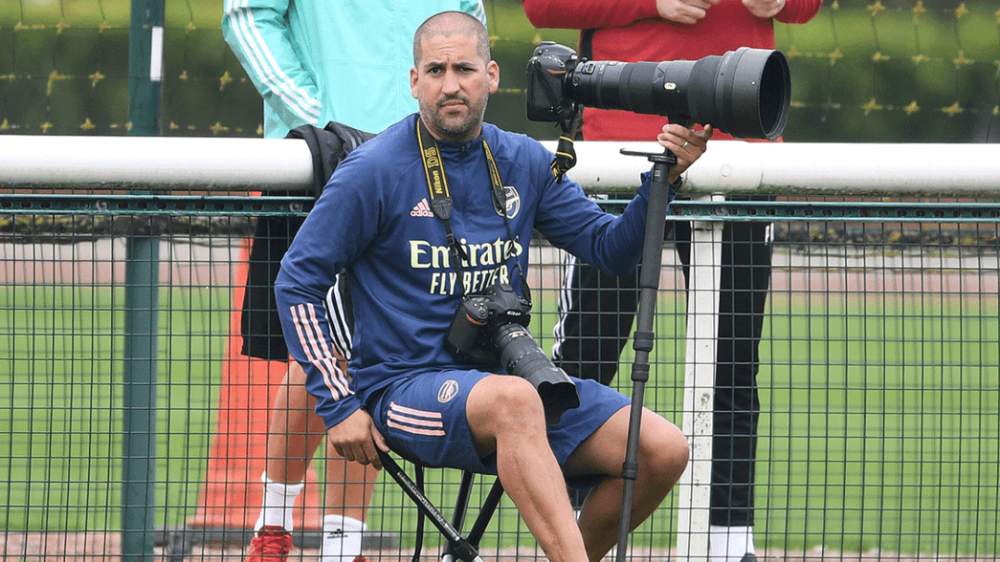
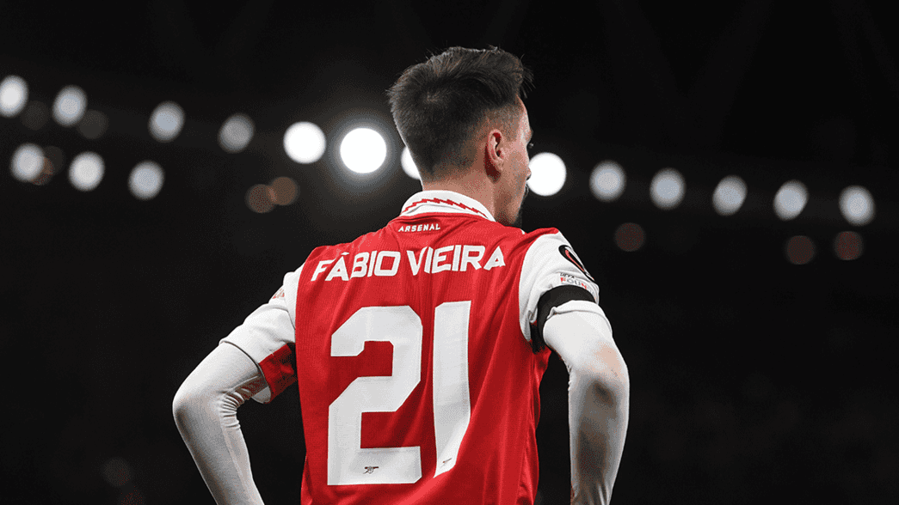
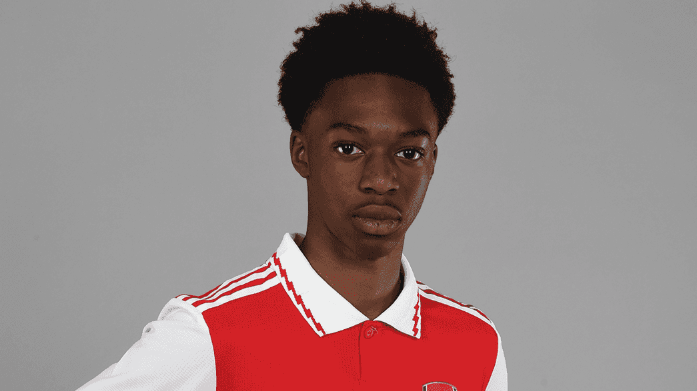

Relive Forest victory with Access All Areas
Sunday saw us return to the top of the Premier League in style by netting five times against Nottingham Forest, and you can relive all the best action from the day in Access All Areas.
Read moreA brace from Reiss Nelson
A brace from Reiss Nelson, plus excellent goals from Gabriel Martinelli, Thomas Partey and Martin Odegaard made it an afternoon to remember in N5, as we recorded our biggest-ever top-flight victory over Forest, while we won by 5+ goals under Mikel Arteta in the Premier League for only the second time.
Tweets
DAVID PRICE: A LIFE THROUGH THE LENS
David Price is one of our two long-standing club photographers. Pricey – as he’s known to everyone here, including the players – talks about how his role has evolved since he joined Arsenal in 2002, and why these days he has to deliver instantly
THE FAMILY AND FOOTBALLERS WHO INSPIRE VIEIRA
There are two sides to Fabio Vieira. On the pitch he has all the silky skills that we so readily associate with the best Portuguese players, but he also has a hard edge that belies his shy smile and seemingly reserved demeanour.
YOUNG GUN: OSMAN KAMARA
Throughout the season, we'll be catching up with our young Gunners to find out more about their route to our academy. This week, it's Osman Kamara.
